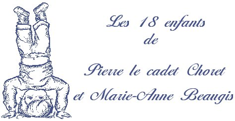

|
Descendance
de Pierre le cadet Choret

|
|

|
|
Pierre et Marie-Anne ont une famille
nombreuse, mais six de leurs dix-huit enfants meurent en bas
âge, dont des jumelles. Tous naissent à
Beauport et sont baptisés dans la chapelle
Notre-Dame de la Miséricorde de Beauport .
Certains y passeront leur vie entière, mais plusieurs migreront
vers la région de Montréal.
|
 Marie-Anne
Née le 18
janvier 1688, la fille aînée reçoit le prénom de sa mère.
Ses parrains sont Jean Beaugis, frère de sa mère, et
Magdeleine Giroux, épouse de Pierre l'aîné Choret, frère de
son père. Marie-Anne
Née le 18
janvier 1688, la fille aînée reçoit le prénom de sa mère.
Ses parrains sont Jean Beaugis, frère de sa mère, et
Magdeleine Giroux, épouse de Pierre l'aîné Choret, frère de
son père.
Marie-Anne décède le 5 février 1688 à Beauport. Elle
n'a pas vécu un mois, comme cela arrive souvent à l'époque.

|
Pierre
Né le 24
février 1690, le fils aîné reçoit le prénom de son père,
toujours dans le but d'assurer la pérennité du nom (comme déjà
vu dans le chapitre Enfance). Ses parrains sont Pierre
Parent et Marie Chauveau. 
Pierre se marie le 1 février 1712 dans la paroisse St-Charles
Borromée, à Charlesbourg, à Angélique Turcot, fille de Jean
et Rose Marie dite Roy. Ils ont passé un contrat de
mariage le 24 janvier précédent auprès du notaire J.Robert
Duprac.
Pierre décède
le 22 juillet 1749 au Sault-au-Récollet à Montréal.
Sa veuve se remarie le 5 octobre 1750 à Jacques Messier au
Sault-au-Récollet.
C'est
de Pierre, fils aîné de Pierre le cadet, que nous
descendons. Donc, dès la troisième génération nos
ancêtres se sont installés dans la région de Montréal.
Visitez le site consacré à Pierre Choret, vous y accédez en
cliquant sur le lien "les 14 générations" en haut de
cette page.
|
Jean-Pierre
Né le 26
septembre 1694, ses parrains sont "Pierre Marescot,
Escrivain du Roy sur son vaisseau La Charente et Dame Catherine
Nafraishous, femme de Sieur François Foucaut, bourgeois de
Québec". Jean-Pierre semble avoir des gens
importants comme parrains, et non des parents ou des voisins et
amis comme à l'habitude.
Quoiqu'il en soit Jean-Pierre décède à Beauport le 13 avril
1696, à l'âge de deux ans et demie.
|
| Hilaire
Né en 1695,
Hilaire se marie à Beauport le 23 juillet 1715 à Geneviève
Brault dite Pominville, fille de Georges et Marie-Magdeleine
Marchand. Nous n'avons pas d'autres détails sur la vie
d'Hilaire.
|
Jacques
Né le 30
juillet 1696, ses parrains sont Jacques Huppé et Thérèse
Bellanger. Comme son frère aîné Pierre, il se marie lui
aussi dans la paroisse St-Charles Borromée. Il épouse
Magdeleine Chrétien, fille de Jean-Charles et Marguerite
Roy. Leur contrat de mariage est passé le 18 septembre
1718 devant le notaire J. Robert Duprac.
Au greffe du notaire Louet, en date du 18 mai 1724 à Québec,
on trouve la cession d'une terre par Pierre Choret et Marie-Anne
Beaugis en faveur de leur fils Jacques et Magdeleine Chrétien,
sa femme.
Jacques n'a pas joui longtemps de la possession de cette terre
puisqu'il décède le 2 février 1725 dans la paroisse
Notre-Dame de Québec.
|
Charles
Né le 19 juin
1697, ses parrains sont Charles Perthuis et Charlotte Choret.
Charles se marie une première fois le 20 septembre 1723 dans la
paroisse Notre-Dame de Québec à Marie-Josephte Roy, fille de
Jean et Jeanne Hotte.
Au greffe du notaire J. Robert Duprac il est fait mention d'un
inventaire, fait le 3 juin 1726, dans lequel Pierre Choret et
Marie-Anne Beaugis cèdent une terre à leur fils Charles et
belle-fille Marie-Josephte Roy.
Charles se remarie le 27 novembre 1737 à Beauport à
Marie-Ursule Huppé, fille d'Antoine et Marie-Ursule
Durant. À noter que les Huppé sont les voisins de
la terre ancestrale de Mathieu depuis 1647. Le contrat de
mariage est passé le 30 novembre devant le notaire Noël Duprac,
soit après le mariage, ce qui est exceptionnel.
Charles décède à Beauport le 13 septembre 1774.
|
Marie-Joseph Née en 1699, elle se marie le 29 avril 1726 à Montréal à Jacques-
Magnan, fils de Georges et Marguerite Lagarde.
|
Françoise Jeanne Née en 1700, elle se marie le 17 novembre 1721 à Beauport à
Mathurin Maurier, fils de Jean et Marie Michaud. Mathurin se remarie le 26 octobre 1750 à
Madeleine Gilbert, fille d'Étienne et Marguerite Thibault.
|
Ignace
Né le 7
juillet 1701, il se marie à Ville-Marie (Montréal) le 21 juin
1723 à Josephte Martin, fille de Pierre et Marie-Anne
Limousin. Leur contrat de mariage est passé le 20 juin
1723 devant le notaire Raimbault.
Un contrat est passé entre les Pères sulpiciens de l'Île de
Montréal et Pierre Choret le cadet en l'étude de P. Raimbault,
père, le 1er mai 1724 (acte 3138). Par ce contrat Pierre
Choret et Marie-Anne Beaugis cèdent une terre de 240 arpents en
bois à leur fils Ignace Choret et leur belle-fille.
Ignace se remarie le 13 juin 1740 à St-Joachim de Pointe-Claire
à Marie-Josephte Gauthier, fille de Jean-Baptiste et Marie
Prézot. Leur contrat est passé le 15 juillet devant le
notaire Raimbault.
Ignace décède le 25 septembre 1750 à Ste-Geneviève de
Pierrefonds. Sa veuve se remarie le 25 janvier 1751 au
même endroit à Philippe Rollin, fils de Philippe et Charlotte
Blénier.
|
| Marie-Anne
et Jeanne sont
des jumelles nées le 20 juin 1703 et décédées la même
année.
|
| Jean-Baptiste
Né le 7
septembre 1705, ses parrains sont Jacques Parent et Suzanne
Huppé. Il décède le 20 septembre 1705.
|
| François
Né le 25
janvier 1708, ses parrains sont François Langlois et Marguerite
Parent. Il décède le 19 septembre 1714 à Beauport
après avoir reçu l'extrême-onction.
|
Jean-Baptiste
Né le 24
octobre 1710, ses parrains sont Jacques Amesse et Suzanne Le
Normand.
Il se marie le 13 avril 1733 dans la paroisse St-Laurent à
Montréal à Angélique Rapidiou, fille de Jean et Françoise
Fleury. Ils ont passé un premier contrat de mariage le 12
avril, signé par le curé Tessier de la paroisse St-Laurent.
Puis un deuxième contrat est passé le 10 juillet devant le
notaire J.B. Adhémar. Angélique décède en 1753 et un
inventaire est dressé par le notaire G. Hodiesne le 18 janvier
1754.
Jean-Baptiste se remarie le 28 janvier 1754 dans la paroisse
Saints-Anges de Lachine à Marie-Anne Moncton dite Lamouche,
fille de Robert et Marie-Isabelle Chénier. Leur contrat
de mariage est passé le 19 janvier devant le notaire Hodiesne.
|
Louis
Né le 1 août 1713, ses parrains sont Louis-Josaphat Capue et Françoise
Lemaistre.
Louis se marie le 19 février 1731 à Beauport à Geneviève
Roy, fille de Jean et Anne Jeanne Hotte. Geneviève est la
soeur de l'épouse de son frère Charles.
Louis se remarie le 22 février 1745 à Québec à
Marie-Josephte Bouthillet, fille de Jacques et Marguerite
Verreau, veuve de Pierre-François Paris.
Au recensement de 1744 des habitants de la ville de Québec, on
retrouve comme résident du Champlain (aujourd'hui rue du Petit
Champlain?) Louis Choret 33 ans, Josephte sa femme 28 ans, 4
enfants: Thérèse 8ans, Marie-Josephte 7 ans, Catherine 6 ans
et Élisabeth 4ans. Marie-Josephte Bouthillet décède à
Québec le 21 août 1762.
|
| Michel
Né en 1715, il
se marie dans la paroisse Saints-Anges de Lachine à Thérèse
Trottier, fille de Joseph et Catherine Martin.
|
| Marie-Anne
Née le 29 mars
1716, ses parrains sont Pierre Parent et Marie-Anne Peuret.
Elle se marie à Beauport à Michel Maheu, fils de Pierre et
Suzanne Girou.
|
Marie Elle se marie le 7 février 1785(?) à Saint-Eustache-des-deux Montagnes à Michel
Tayon ou Taillon, fils de Michel et Madeleine Masson.
|
| |
|
|